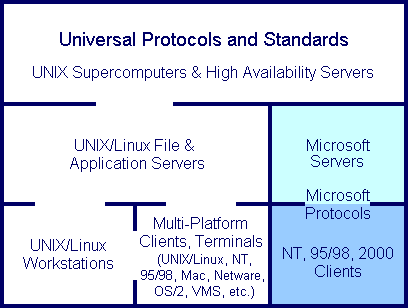

| Migrar con Confianza desde los Servidores Microsoft Windows a UNIX/Linux: Información Estratégica para Ejecutivos y Directivos de TI; Libro blanco por Jon C. LeBlanc | ||
|---|---|---|
| Anterior | Siguiente | |
Cuando se trata de servidores de gama media y alta, los principales usuarios corporativos han confiado tradicionalmente en UNIX como soporte de aplicaciones comerciales a través de vendedores como Oracle, Sybase, SAP, Lotus Notes y otros. Recientemente está aumentando su confianza en el SO Linux para servidores web (típicamente corriendo el popular servidor web de código abierto llamado Apache), servidores de gama baja para pequeños negocios, entornos locales, y centros de datos. De hecho, la industria de las TI ha mostrado una significativa disposición para migrar desde servidores UNIX de gama baja a Linux, debido a la facilidad de sustitución y los costes significativamente menores respecto a UNIX. Esto es favorecido inestimablemente por el hecho de que tanto UNIX como Linux permiten a los adminstradores integrar completamente las capacidades y metodologías (basadas en estándares técnicos "abiertos" y protocolos universales) entre estas máquinas.
La migración a Linux sigue siendo bastante buena en la clases de servidores de pequeño tamaño y estaciones de trabajo, habitados frecuentemente por Microsoft Windows NT, 2000 y XP. Los productos de Microsoft están fuertemente basados en funcionalidades, formatos de datos y ficheros y protocolos de red propietarios. Estos típicamente impiden dicha integración vertical y obligan a los directivos de TI a "bloquearse" dentro del subgrupo cerrado centrado en Microsoft. Modificar un servidor o estación de trabajo Windows para que cumpla con los protocolos universales puede ser difícil y costoso.
La experiencia de los últimos años demuestra que las personas que han hecho sus carreras principalmente o exclusivamente bajo SOs Microsoft y han ascendido en las estructuras de las empresas de las TI, han tendido a ver la informática empresarial como una extensión de la informática de escritorio basada en plataformas Microsoft y, por tanto, han tendido a afrontar los requerimientos de los entornos de medianos y grandes servidores desde un conjunto de habilidades reducido. La estrategia corporativa de Microsoft de hacer la administración de sus SO "facil" indudablemente ha abierto el mundo de la computación a incontables millones de personas pero, desafortunadamente, también ha resultado en la pretensión de que la administración de entornos de computación corporativos críticos es una taréa "facil".
El resultante ecosistema informático centrado en Microsoft conlleva una elevación injustificable de los SOs de Microsoft a un nivel alto en entornos corporativos, dadas las capacidades (o su falta de ellas) de los productos de Microsoft para servidores. Tal y como es la naturaleza humana, tales mentalidades son difíciles de cambiar, incluso ante comparaciones sonrojantes (las cuales abundan actualmente).
El resultado neto para una red o para un entorno informático corporativo es una estratificación de SOs artificial basada en su capacidad (o su falta de ella) para interoperar como un entorno. Los SOs Windows han creado una clase de administradores separada, menos flexible, que emplean sus propios medios propietarios y requieren formación específica aparte de la de los administradores UNIX/Linux. En casi cualquier caso, la cantidad de administradores que se necesitan en un entorno informático centrado en Microsoft es mucho mayor que la de un entorno UNIX/Linux equivalente, por muchas razones señaladas en este escrito.

El conjunto de protocolos TCP/IP, creados y desarrollados en UNIX y administrados por entidades internacionales de estándares, son continuamente reelaborados por Microsoft para impedir la interoperabilidad entre los sistemas operativos. Por ejemplo, Microsoft Corporation se apropió e hizo extensiones de un protocolo de seguridad de red público y abierto, Kerberos, que fue desarrollado en el MIT y se puso a disposición de toda la comunidad informática libre de coste. Está extendida la sospecha, entre los diseñadores de Kerberos y otros expertos, de que las extensiones que Microsoft introdujo a su implementación de Kerberos en Windows 2000 no tenían otro propósito que hacer los productos de los competidores incompatibles con las estaciones de trabajo de Microsoft, para hacer que las empresas adoptaran servidores Microsoft en lugar de UNIX/Linux. Como se describe posteriormente, el producto "Directorio Activo" de Microsoft es el centro de los planes de la compañia para competir con los entornos de servicios de directorio independientes de la arquitectura, como los estándar abiertos LDAP y Samba o el "Netware" de Novell, entre otros. El miedo de Microsoft a adoptar por completo el estandar abierto de Kerberos se debe a que otras personas podrían reproducir la pieza central que ofrece su Directorio Acrivo: el servidor "controlador de dominio", y por eso las extensiones secretas de Kerberos frustran con eficacia la ingeniería inversa necesaria para hacerlo.
Además, dada la oleada reciente en el uso de los ambientes libres y abiertos del servidor de LDAP y Samba para los servicios del directorio a los clientes de Windows, Microsoft evidentemente no ha tomado en vano esta amenaza su Directorio Activo: han tomado como objetivo directo al propio LDAP con su producto "Outlook 2002", que ha rediseñado la anterior interfaz de búsqueda Outlook LDAP, que funcionaba correctamente, de forma que cause grandes problemas en la recuperación de datos. Las pruebas paralelas entre Outlook 2002 con los clientes LDAP de versiones anteriores de Outlook, Netscape y Mozilla, demuestran que la actual versión puede tardar minutos en recibir los datos que las otras reciben instantáneamente. Los investigadores han identificado que el interfaz actual se ha reescrito mal, y que las tentativas de forzarle a enviar peticiones LDAP correctas no funcionan. Sin embargo, Outlook 2002 está optimizado para utilizar el Directorio Activo de Microsoft.
La metodología elegida por Microsoft para su comunicaciones de red por TCP/IP, CIFS-SMB, es un protocolo inherentemente ineficiaz que requiere una cantidad de tráfico en la red significativamente mayor para una tarea determinada que el protocolo de UNIX conocido como NFS (que tampoco es un paradigma elegante). CIFS-SMB es un "indiscreto charlatán", envía grandes cantidades de información fácilmente interceptable por la red. Puesto que Microsoft sabe que el uso de CIFS-SMB deberá terminarse eventualmente, su nueva metodología de sistema de ficheros en red, DFS (Distributed File System - Sistema de Ficheros Distribuido), recuerda mucho a NFS en su uso de "montar" los sistemas de ficheros remotos. Estoes tan distinto de la práctica establecida que los administradores Windows han sido muy rehacios a adoptarlo (¿porque no es "facil"?) y Microsoft ha hecho muy poco por popularizarlo. Sería muy difícil encontrar un administrador UNIX/Linux que no use NFS, y aunque las primeras versiones de NFS tenían problemas de estabilidad, todos estos problemas desaparecieron hace algunos años en la transición de NFS a su versión 3.
Puesto que tanto NFS como CIFS-SMB son los estándares hoy en día para la interoperatividad de los sistemas de ficheros entre ordenadores, es importante notar que los servidores UNIX/Linux pueden operar con ambos protocolos con rapidez y eficiencia, mientras que los servidores Windows constantemente pierden en las pruebas comparativas y no pueden proveer servicios NFS sin software y licencias adicionales. Usando la aplicación servidor de Código Abierto (libre de coste) llamada SAMBA, una máquina UNIX/Linux puede hacerse pasar por un servidor de ficheros NT, 2000 o XP ante los interfaces de Entorno de Red de los clientes Microsoft. Debido al excelente rendimiento de la entrada/salida de datos en los sistemas operativos UNIX/Linux, el rendimiento de un servidor SAMBA es equivalente al de un servidor Microsoft tanto en velocidad como en fiabilidad. De hecho, las pruebas comparativas publicadas en PC Magazine muestran que el último software de Samba supera en torno al 100% el rendimiento de Windows 2000.
Microsoft emplea CIFS-SMB no sólo para servir ficheros, sino también para las impresoras y la administración central de nombres de las máquinas y la validación de usuarios y sus recursos entre servidores y estaciones de trabajo Microsoft en un entorno lógico llamado "dominio". Cada dominio requiere un Controlador Primario de Dominio (PDC) y, como protección ante caídas, un Controlador de Dominio de Reserva (BDC). Dependiendo de la antigüedad y el tamaño del dominio Windows, tambien podría requerirse un servidor Servicio Windows de Nombres de Internet (WINS) Primario y Secundario (WINS es otro protocolo exclusivo de Microsoft innecesario en cualquier otro entorno infomático).
Las últimas versiones de SAMBA permiten a un servidor UNIX/Linux ser un sustituto uno por uno para Windows PDC (de hecho, un tres por uno, pues también puede reemplazar a los servidores WINS del ejemplo anterior). Para pequeñas empresas IT, la conocida durabilidad de un servidor SAMBA UNIX/Linux para cubrir las necesidades de impresión y ficheros de un grupo de clientes Windows es una alternativa muy atractiva a la costosa, y menos fiable opción de un servidor Windows. Para organizaciones de gran escala, las principales plataformas UNIX como Sun Solaris y HP-UX corren una versión especialmente elaborada de SAMBA dentro de sus núcleos (en lugar de aplicaciones en espacio de usuario) para dar soporte SAN (Red de Área de Almacenamiento) y/o NAS (Red Adjunta de Almacenamiento) a grandes grupos de clientes Windows. Un servidor UNIX/Linux puede dar servicio simultáneamente a clientes Windows via SAMBA, a clientes UNIX/Linux via NFS, Macintosh via Netatalk (una alternativa de código abierto a Appletalk) y servicio limitado a clientes Novell Netware vía MarsNWE (un emulador de Netware de código abierto, aunque Novell comercializa su propio producto Netware para Linux que ofrece funcionalidad completa).
La reputación del Active Directory se ha nublado de protestas por una difícil administración y un rendimiento decepcionante. Algunas implementaciones hardware de vendedores líderes en el mercado corriendo Windows 2000 con Active Directory se han probado incapaces de soportar más de cinco niveles por debajo de la raíz del directorio antes de la aparición de pérdidas de rendimiento inaceptables. Dado que el propósito de una típica estructura de servicios de directorio es asemejar o corresponderse con la estructura corporativa real, cinco niveles es claramente insuficiente para la mayoría de empresas de tamaño medio. En comparación, implementaciones avanzadas de LDAP del tipo de las encontradas en la arquitectura UNIX/Linux pueden soportar decenas de niveles de directorios, mientras que en instalaciones UNIX en superordenadores pueden encontrarse cientos de niveles de directorio LDAP.
Para aquellas organizaciones IT que necesitan mantener servicios de directorio basados en Microsoft pero preferirían los beneficios de UNIX/Linux en el lado del servidor, el equipo de SAMBA ha anunciado que el próximo SAMBA Version 3.0 será totalmente capaz de dar servicios Active Directory. Es muy poco probable que tal combinación hardware/software sufra de las limitaciones de rendimiento y seguridad que sufre la oferta actual de Microsoft. Por supuesto, se ha sugerido que el software cliente de Microsoft será modificado para frustrar tal uso, al igual que Outlook 2002 con respecto a LDAP.